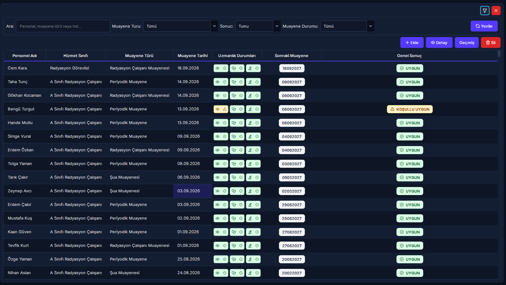

13. Sağlık Muayeneleri ve Periyodik Takip
Radyasyonla çalışan personelin işe giriş ve periyodik sağlık gözetim süreçlerini, üç temel uzmanlık branşının (Göz, Dahiliye, Dermatoloji) klinik değerlendirmelerini, NDK ve Sağlık Bakanlığı periyotlarına göre otomatik sonraki randevu tarihini, yaklaşan/süresi dolan muayene uyarılarını ve revizyon denetim izini yöneten modüldür.
Radyasyon çalışanlarının yıllık zorunlu periyodik kontrol döngüsü.
Yoğun radyasyonlu özellikli birimlerde çalışanların periyot aralığı.
Göz (Lens/Katarakt), Dahiliye (Kan/Tiroid), Dermatoloji (Cilt).
Muayene gününe 30 gün kala devreye giren sarı yaklaşma rozeti.
Bu ekran doğrudan resmi bir Sağlık Kurulu (Heyet) Raporu işleme veya kesin çalışma engeli oluşturma ekranı değildir; personelin rutin periyodik klinik muayenelerini takip eder. Herhangi bir branşta *"Uygun Değil"* veya *"Koşullu Uygun"* kanaati verilirse personel derhal ilgili ana bilim dalına ileri tetkik için sevk edilir. İleri tetkikler sonucunda personelin radyasyonlu alanda çalışamayacağı resmi Sağlık Kurulu (Heyet) Raporu ile kesinleşirse, bu durum Nöbet & Çalışma Kısıtları (Modül 07) modülüne heyet raporu şerhiyle işlenir.
Vizyonder Hızlı Karar Reçetesi (Klinik Takip & İSG Özeti)
2. Arayüz Bileşenleri ve 5N1K Tablosu
Sağlık Muayeneleri modülündeki ekran kontrolleri, butonlar ve branş imza alanlarının işlevsel kullanım kılavuzu:
| Bileşen / Buton | Türü | Ne İşe Yarar? (Ne?) | Kim Kullanır? (Kim?) | Ne Zaman Kullanılır? (Ne Zaman?) | Nerede Yer Alır? |
|---|---|---|---|---|---|
| [Ekle] | Buton | Yeni sağlık muayenesi kayıt modalını açar. | Hekim / RKS / İSG Sorumlusu | Personel muayeneye girdiğinde | Liste Araç Çubuğu |
| [Detay] | Buton | Seçili muayenenin branş bulguları ve rapor dosyasını açar. | Tüm Yetkililer | Klinik notlar incelenirken (veya çift tık) | Liste Araç Çubuğu |
| [Geçmiş] | Buton | Personelin geçmiş yıllardaki tüm muayenelerini listeler. | Hekim / Denetçi | Personel geçmişi kıyaslanırken | Liste Araç Çubuğu |
| [Sil] | Buton | Hatalı girilmiş muayeneyi revizyon günlüğüne yazarak siler. | Süpervizör / Admin | Mükerrer veya yanlış kayıt iptalinde | Liste Araç Çubuğu |
| [Arama Kutusu] | Giriş Alanı | Ad, soyad, TC kimlik no veya muayene notlarında filtreler. | Tüm Kullanıcılar | Hızlı personel veya vaka aramasında | Filtre Paneli |
| [Muayene Durumu] | Açılır Kutu | Süresi Geçmiş, Yaklaşıyor (30 gün) ve Normal satırları süzer. | RKS / İSG Uzmanı | Kontrolü yaklaşan veya geçen personeller taranırken | Filtre Paneli |
| [TC / Ad ile Ara] | Tamamlayıcı | Personeli harf yazarak otomatik tamamlar; unvan/dep yansıtır. | Kullanıcı | Muayene formu doldurulurken | Ekleme Modalı |
| [Dahiliye / Derm / Göz İmza] | Onay Kutusu | İlgili branş hekiminin muayeneyi tamamlayıp imzaladığını teyit eder. | Hekim | Branş muayenesi bittiğinde | Bulgular Grubu |
| [Muayene Formu Seç/Aç/Sil] | Dosya Butonları | Rapor PDF/görselini şifreli kasaya kopyalar veya görüntüler. | Kullanıcı | Heyet evrakı arşivlenirken | Belge Satırı |
3. Muayene Takip Listesi ve Görsel Durum İkonları
Personellerin periyodik muayene durumu, branş ikonları (Göz, Dahiliye, Dermatoloji) ve genel uygunluk kararlarının merkezi kokpiti:

Radyasyonla Çalışmaya Uygun
Tüm branş kontrollerinde engel durum tespit edilmemiş, personelin radyasyonlu ortamda çalışmasında sakınca bulunmayan rutin kayıtlar.
Şartlı & Yakın Takip
Hekim tarafından koruyucu ekipman şartı veya daha sık aralıklarla ara kontrol tavsiyesi konulmuş çalışanları simgeler.
Periyodu Geçmiş Muayene
Bir sonraki kontrol tarihi üzerinden zaman geçmiş çalışanlar; sistem kırmızı uyarı verir ve gecikme raporunda listeler.
4. Yeni Muayene Kaydı Açma ve Uzmanlık Bulguları
Personel seçimi, muayene türüne göre otomatik sonraki tarih hesabı ve Dahiliye, Dermatoloji, Göz branş değerlendirmeleri:
Yeni Sağlık Muayenesi Formu

Form Doldurma ve Otomatik Takvim Mantığı
- • Otomatik Personel Tamamlama: `TC / Ad ile Ara` alanına yazıldıkça personeller listelenir; departman ve unvan otomatik gelir.
- • Periyot Hesabı: Muayene Türü `Şua Muayenesi` seçilirse 6 ay, `Radyasyon Çalışanı Muayenesi` seçilirse 12 ay ileriye dönük `Sonraki Muayene Tarihi` artık yıl kontrolleriyle hesaplanır.
- • Üç Branş Hekim İmzası: Dahiliye, Dermatoloji ve Göz branşlarının `[x] İmzalandı` kutusu, branş sonucu ve tarihi girilir. Formu kaydetmek için en az bir branş sonucu zorunludur.
- • Şifreli Belge Arşivi: `[Seç]` butonuyla yüklenen raporlar AES-256 Fernet ile şifrelenir ve `SAGLIK-{personel_id}-{belge_id}` olarak kasalanır.
Hekimin tıbbi kanaati, koruyucu donanım şerhleri veya ara kontrol tavsiyeleri `Tavsiyeler` metin kutusuna girilir ve detayda saklanır.
5. İleri Tetkik Sevk Süreci ve Resmi Heyet Raporu Kısıtı
Rutin periyodik kontrolde şüpheli bulgu saptandığında izlenen kurumsal sevk ve çalışma kısıtı protokolü:
Şüpheli Bulgu & İleri Tetkik Sevki
Periyodik muayenede branş hekimi tarafından *"Uygun Değil"* veya *"Koşullu Uygun"* kanaati belirtildiğinde, personel ilgili kliniğe ayrıntılı ileri tetkikler için sevk edilir.
Resmi Sağlık Kurulu (Heyet) Kararı
İleri tetkiklerin ardından Sağlık Kurulu toplanır. Personelin radyasyon ortamında çalışıp çalışamayacağı resmi Heyet Raporu tutanağına bağlanır.
Nöbet Muafiyeti & Çalışma Kısıtı
Heyet raporunda radyasyonsuz alanda çalışma kararı çıkarsa, Yönetici/RKS tarafından Modül 07 üzerinden resmi çalışma kısıtı açılır ve nöbet motoru personeli korumaya alır.
6. Hibrit Arayüz ve Web Portalı Görünümü
Masaüstü klinik kayıt ve evrak yönetim merkezi ile web portalı sağlık göstergeleri karşılaştırması:
Masaüstü Yönetim İstemcisi (PySide6)
- ✓ Yeni muayene kaydı açma, branş sonuçları ve hekim imzalarını teyit etme.
- ✓ Taranmış sağlık heyet raporlarını AES-256 şifreli kasaya aktarma.
- ✓ Sağ tık ile personelin tüm kronolojik muayene geçmişini inceleme.
- ✓ Değişiklik ve silme işlemlerinde revizyon günlüğü ve evrensel onay kuyruğu.
Web & Mobil Portalı (SaglikDashboard)
- ✓ Sağlık Uyum Oranı (%): Kurum genelindeki personellerin muayene güncelliği.
- ✓ Branş Dağılım Çizelgesi: Göz, Dahiliye ve Dermatoloji uygunluk oranları grafiği.
- ✓ Muayene Yığılma Tahmini: 12 aylık periyotta beklenen kontrol randevu yoğunluğu.
- ✓ Kişisel Sağlık Karnesi: Personelin bir sonraki kontrolüne kalan gün sayısını görmesi.
7. Sağlık Muayeneleri Karar Destek Akış Şeması
Periyodik kontrol planlamasından branş değerlendirmesi ve resmi heyet kısıtına kadar olan karar döngüsü:
Sağlık Takibi & Mit Avcısı (Kritik Kurallar)
"Klinik muayenede hekim 'Uygun Değil' seçtiği anda sistem personelin tüm nöbetlerini otomatik iptal eder ve çalışmasını kilitler."
Rutin poliklinik muayenesi doğrudan çalışma engeli koymaz. Personel ileri tetkike sevk edilir; çalışamayacağı resmi Sağlık Kurulu (Heyet) Raporu ile kesinleşirse bu durum Modül 07'ye kısıt olarak işlenir.
"Sağlık muayene formunu kaydedebilmek için 3 branşın da (Göz, Dahiliye, Cilt) aynı gün tamamlanmış olması şarttır."
Hayır. En az bir branş sonucu (örneğin sadece Dahiliye kan tahlili) girilerek form kısmi/taslak kaydedilebilir; diğer uzmanlık muayeneleri tamamlandıkça form açılarak güncellenir.
"Sonraki muayene tarihi sistem tarafından 12 ay sonraya atandığı için hekim ara kontrol istese de tarih değiştirilemez."
Sistem seçilen türe göre (6 veya 12 ay) varsayılan tarihi önerir; ancak hekimin klinik önerisi doğrultusunda Sonraki Muayene Tarihi alanına manuel olarak daha erken bir kontrol tarihi girilebilir.
8. Sıkça Sorulan Sorular (SSS)
Sağlık muayeneleri ve periyodik kontrollerde en sık karşılaşılan durumlar ve yanıtları:
Soru 1: Bir muayene kaydında "Uygun Değil" seçildiğinde personel hemen nöbetlerden düşürülür mü?
Bu muayene ekranı rutin klinik takip ekranıdır. "Uygun Değil" görüşü verildiğinde personel ilgili branş kliniğine ileri tetkik için yönlendirilir. Eğer ileri tetkiklerin ardından resmi Sağlık Kurulu (Heyet) Raporu ile çalışamayacağı kesinleşirse, bu durum Modül 07 (Nöbet Ayarları ve Kısıtlar) ekranından heyet raporu şerhiyle resmi kısıt olarak işlenir ve nöbet muafiyeti başlar.
Soru 2: Muayenede üç branş hekiminden sadece biri sonuç verdiğinde formu kaydedebilir miyim?
Evet. Formda en az bir branş sonucunun (örneğin yalnızca Dahiliye hemogramı) seçilmiş olması kaydetmek için yeterlidir. Diğer branş muayeneleri tamamlandıkça form [Detay] butonundan açılarak güncellenebilir.
Soru 3: Sonraki muayene tarihi otomatik geliyor fakat hekim 3 ay sonra ara kontrol önerdi. Tarihi değiştirebilir miyim?
Evet. Sistem seçilen türe göre (6 ay veya 12 ay) varsayılan sonraki tarihi otomatik hesaplar; ancak hekim tavsiyesi doğrultusunda `Sonraki Muayene Tarihi` alanına manuel olarak daha erken bir tarih yazılabilir.
Soru 4: Geçmişte silinmiş veya değiştirilmiş bir sağlık muayenesini denetim esnasında nasıl kanıtlayabilirim?
Tablo satırına sağ tıklayıp Değişiklik Geçmişi seçeneğini açtığınızda; sistem kaydın eski JSON verisini, değiştiren/silen kullanıcının adını ve kesin işlem zaman damgasını resmi denetim izi tablosunda sunar.